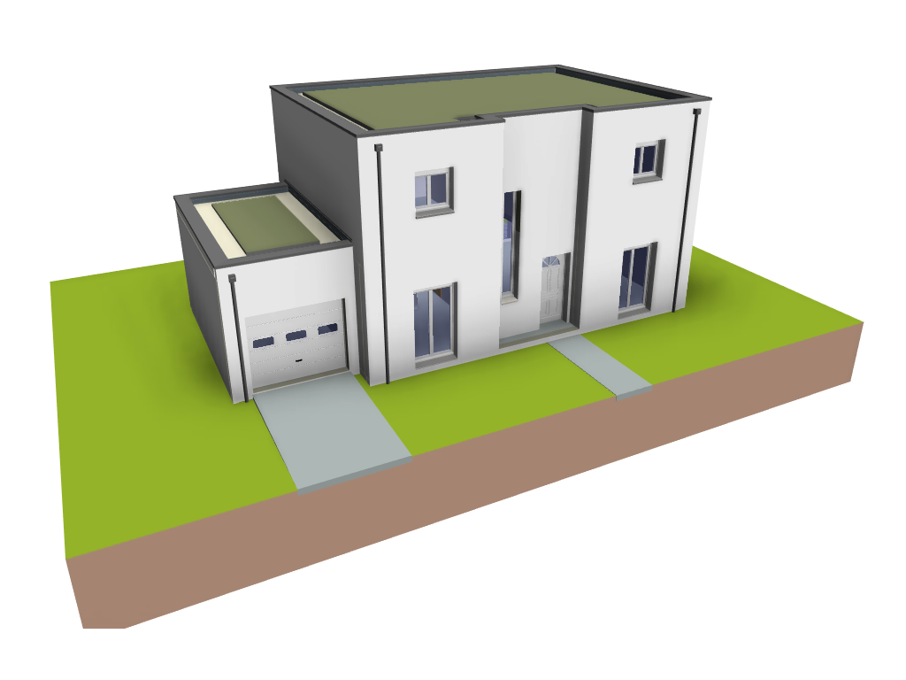

- L'outil BBCLIC 2020 vous propose 4 choix de typologie de maisons individuelles pour simuler les performances thermiques et environnementales selon la règlementation RE 2020.
- La structure de chaque maison sera constitué d'élements en béton préfabriqués.
- Chaque type de maisons individuelles propose également 8 systèmes de production. Ces systèmes sont représentatifs du marché actuel (en 2022).
Maison individuelle de type plain-pied
Maison individuelle de type R + Combles perdus
Maison individuelle de type R + Combles aménagés
Maison individuelle de type R + Toiture-terrasse
- Dans le cadre de cet outil, la maison R+1 avec combles aménagés est une maison de type T5 avec une surface habitable de 101 m², contenant :
- 2 chambres.
- 1 bureau.
- 1 salle de bains.
- 2 WC séparé.
- 1 cellier.
- 1 séjour cuisine traversant.
- 1 entrée.
- 1 garage.
L'ensemble des pièces sont réparties sur un rez-de-chaussée et un étage en comble aménagés.
- Le garage est considéré comme local non chauffé. Par conséquent, les parois séparatives entre le garage et les autres pièces du pavillon sont déperditives.
- La maison étudiée n’est accolée à aucun autre bâtiment. Elle constitue à elle seule un unique bâtiment.
- La hauteur sous-plafond est de 2.50 m. Les combles sont aménagés.
- L’indice de compacité de la maison, correspondant au rapport de la somme de l’ensemble des surfaces déperditives ramenées à la surface habitable, est de 2.97.
- Dans le cadre de cet outil, la maison R+1 avec combles perdus est une maison de type T5 avec une surface habitable de 115 m², contenant :
- 4 chambres.
- 2 salle de bains.
- 2 WC séparé.
- 1 cellier.
- 1 séjour cuisine traversant.
- 1 dégagement.
- 1 garage.
L'ensemble des pièces sont réparties sur un rez-de-chaussée et un étage.
- Le garage est considéré comme local non chauffé. Par conséquent, les parois séparatives entre le garage et les autres pièces du pavillon sont déperditives.
- La maison étudiée n’est accolée à aucun autre bâtiment. Elle constitue à elle seule un unique bâtiment.
- La hauteur sous-plafond est de 2.50 m. L’ensemble du plancher haut de l'étage est sous-combles non aménageables. Il est constitué d’une plaque de plâtre suspendue sous isolant.
- L’indice de compacité de la maison, correspondant au rapport de la somme de l’ensemble des surfaces déperditives ramenées à la surface habitable, est de 2.46.
- Dans le cadre de cet outil, la maison R+1 avec toiture-terrasse est une maison de type T5 avec une surface habitable de 115 m², contenant :
- 4 chambres.
- 2 salle de bains.
- 2 WC séparé.
- 1 cellier.
- 1 séjour cuisine traversant.
- 1 dégagement.
- 1 garage.
L'ensemble des pièces sont réparties sur un rez-de-chaussée et un étage.
- Le garage est considéré comme local non chauffé. Par conséquent, les parois séparatives entre le garage et les autres pièces du pavillon sont déperditives.
- La maison étudiée n’est accolée à aucun autre bâtiment. Elle constitue à elle seule un unique bâtiment.
- La hauteur sous-plafond est de 2.50 m. L’ensemble du plancher haut de l'étage est une toiture-terrasse inaccessible.
- L’indice de compacité de la maison, correspondant au rapport de la somme de l’ensemble des surfaces déperditives ramenées à la surface habitable, est de 2.46.

- Ce menu permet de saisir directement le coefficient de pont thermique (ψ en W/(m.K)) des jonctions entre plancher bas et refends de soubassement. Dans le cas de la maison de plain-pied, cette jonction traverse la maison individuelle, du garage jusqu’à la chambre 2.
- Le pont thermique correspondant est nul si le plancher est intégralement isolé par dalle flottante et si le refend n’est pas traversant. Dans le cas contraire, ce pont thermique dépend :
- de la nature du plancher et de son principe d’isolation : en sous-face (entrevous PSE …), par dalle flottante, ‘duo’ …
- de la nature du refend (maçonnerie courante, isolante …) et de son caractère traversant ou non ;
- de l’éventuelle isolation complémentaire sur toutes les faces des refends dans le vide sanitaire.
A noter que les déperditions par ce type de ponts thermiques transitent par le sol et/ou le volume du vide sanitaire. Ils rentrent donc en compte dans le calcul du coefficient Ue du plancher bas au même titre que le Up de ce plancher.
- Ce menu permet de saisir directement le coefficient de pont thermique (ψ en W/(m.K)) des jonctions entre plancher bas et refends de soubassement. Dans le cas de la maison de plain-pied, cette jonction traverse la maison individuelle, du garage jusqu’à la chambre 2.
- Le pont thermique correspondant est nul si le plancher est intégralement isolé par dalle flottante et si le refend n’est pas traversant. Dans le cas contraire, ce pont thermique dépend :
- de la nature du plancher et de son principe d’isolation : en sous-face (entrevous PSE …), par dalle flottante, ‘duo’ …
- de la nature du refend (maçonnerie courante, isolante …) et de son caractère traversant ou non ;
- de l’éventuelle isolation complémentaire sur toutes les faces des refends dans le vide sanitaire.
A noter que les déperditions par ce type de ponts thermiques transitent par le sol et/ou le volume du vide sanitaire. Ils rentrent donc en compte dans le calcul du coefficient Ue du plancher bas au même titre que le Up de ce plancher.
- Dans le cadre du présent outil, aucun plafond suspendu n’est prévu sous une dalle béton. En revanche, un plafond suspendu avec un plénum de 60 mm est systématiquement mis en œuvre sous un plancher intermédiaire à poutrelles et entrevous.
- Par soucis de simplification, la hauteur sous plafond du bâtiment étudié (et donc la surface déperditive par les façades) reste constante.
- Par convention, on considère également que le plafond suspendu est installé avant le doublage de façade intérieur. Par conséquent, le doublage intérieur s’arrête en sous-face de plafond suspendu, ce qui laisse un espace de 60 mm de hauteur non isolé sous le plancher. Une isolation complémentaire en périphérie de plénum peut donc diminuer significativement le pont thermique.
- Ce menu permet donc de considérer la mise en place de cette isolation périphérique (pour un plancher poutrelles hourdis uniquement).
- Lorsque le plafond suspendu est isolé, l’isolation périphérique prise en compte est une laine de verre de conductivité thermique λ=0.040 W/m.K, de 60mm d’épaisseur et de 50 cm de largeur.
- L’isolation périphérique en plafond suspendu a donc un impact sur les besoins bioclimatiques, les ratios de ponts thermiques (moyen et L9) et le confort d’été.
- Pour un plancher poutrelles/entrevous, par soucis de simplification et en première approximation, on peut considérer que si le plafond suspendu est mis en œuvre après l’isolation de façade et que l’isolation de façade vient continument en contact de la sous-face du plancher (poutrelle et entrevous, en rive et en about), il est alors possible de considérer cette configuration comme équivalente à celle avec un plafond suspendu isolé en périphérie. La case correspondante peut donc être cochée.
- À noter que dans certaines configurations de plancher (en particulier avec isolation sur la face supérieure), la mise en œuvre d’une isolation complémentaire périphérique en sous-face peut entraîner une augmentation du risque de condensation.
Exemple de plafond suspendu non isolé en périphérie
Exemple de plafond suspendu isolé en périphérie
Exemple de configuration assimilée à celle d'un plafond suspendu isolé en périphérie
- Dans le cadre du présent outil, aucun plafond suspendu n’est prévu sous une dalle béton. En revanche, un plafond suspendu avec un plénum de 60 mm est systématiquement mis en œuvre sous une toiture à poutrelles et entrevous.
- Par soucis de simplification, la hauteur sous plafond du bâtiment étudié (et donc la surface déperditive par les façades) reste constante.
- Par convention, on considère également que le plafond suspendu est installé avant le doublage de façade intérieur. Par conséquent, le doublage intérieur s’arrête en sous-face de plafond suspendu, ce qui laisse un espace de 60 mm de hauteur non isolé sous le plancher. Une isolation complémentaire en périphérie de plénum peut donc diminuer significativement le pont thermique.
- Ce menu permet donc de considérer la mise en place de cette isolation (pour un plancher poutrelles hourdis uniquement).
- Lorsque le plafond suspendu est isolé, l’isolation périphérique prise en compte est une laine de verre de conductivité thermique λ=0.040 W/m.K, de 60mm d’épaisseur et de 50 cm de largeur.
- L’isolation en plafond suspendu a donc un impact sur les besoins bioclimatiques, le ratio moyen de ponts thermiques et le confort d’été.
- Pour un plancher poutrelles/entrevous, par soucis de simplification et en première approximation, on peut considérer que si le plafond suspendu est mis en œuvre après l’isolation de façade et que l’isolation de façade vient continument en contact de la sous-face du plancher (poutrelle et entrevous, en rive et en about), il est alors possible de considérer cette configuration comme équivalente à celle avec un plafond suspendu isolé. La case correspondante peut donc être cochée.
- À noter que dans certaines configurations de plancher (en particulier avec isolation sur la face supérieure), la mise en œuvre d’une isolation complémentaire en sous-face peut entraîner une augmentation du risque de condensation.
Exemple de plafond suspendu non isolé en périphérie
Exemple de plafond suspendu isolé en périphérie
Exemple de configuration assimilée à celle d'un plafond suspendu isolé en périphérie